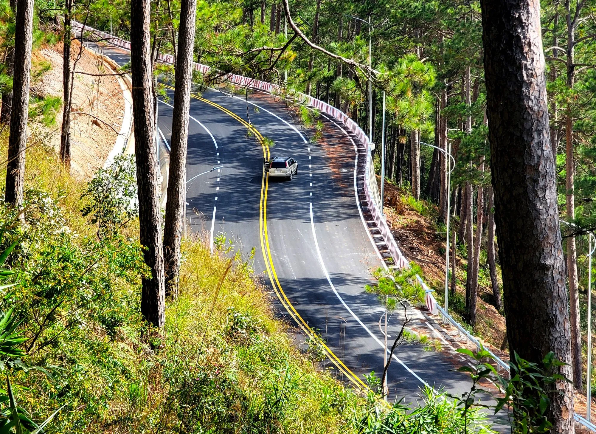
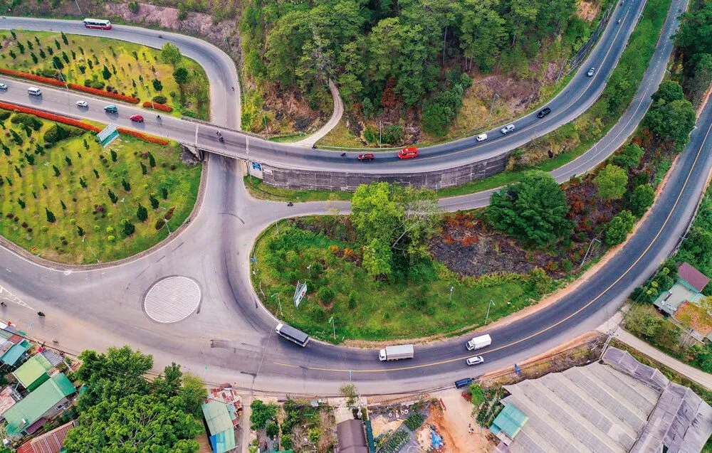
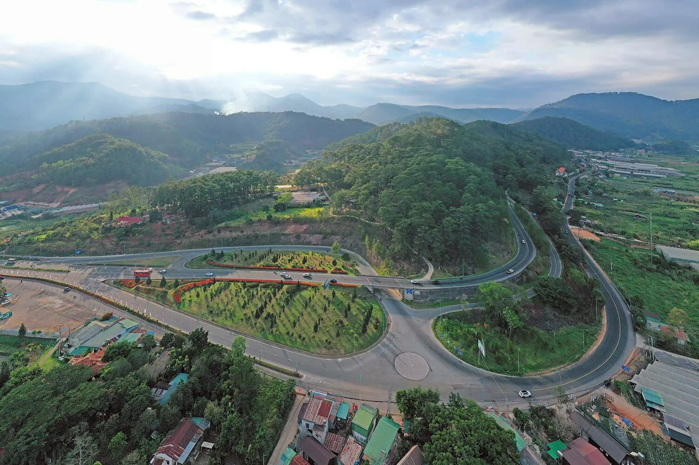
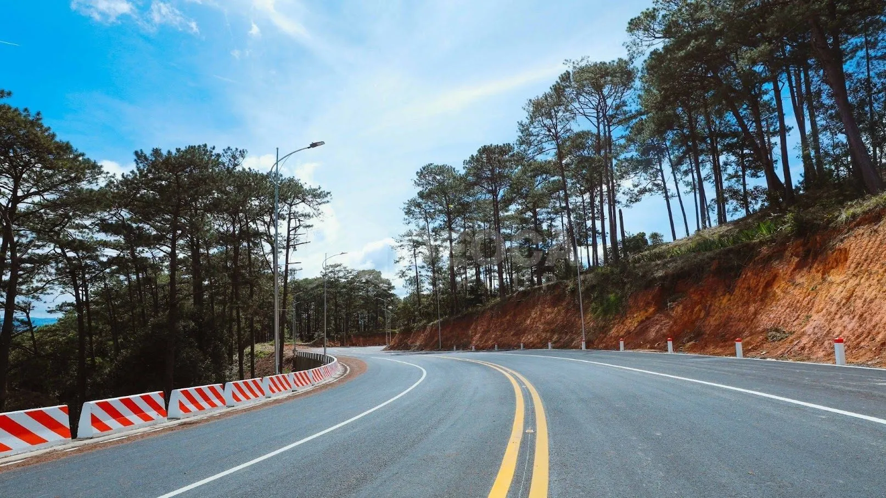
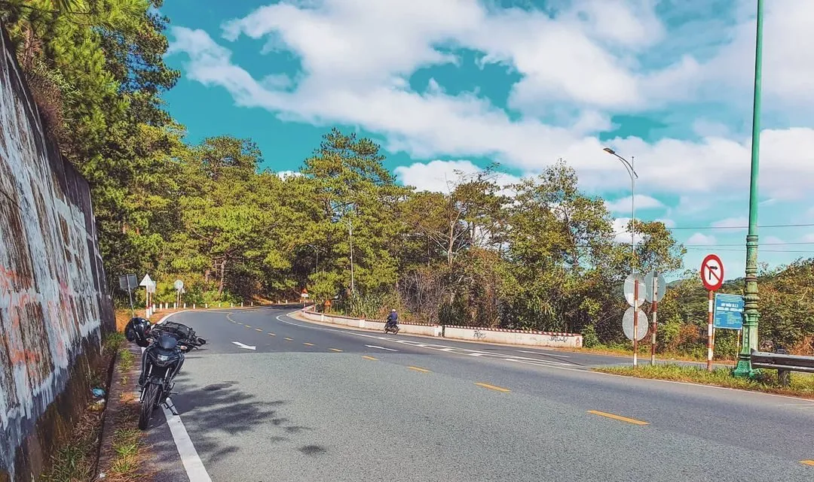
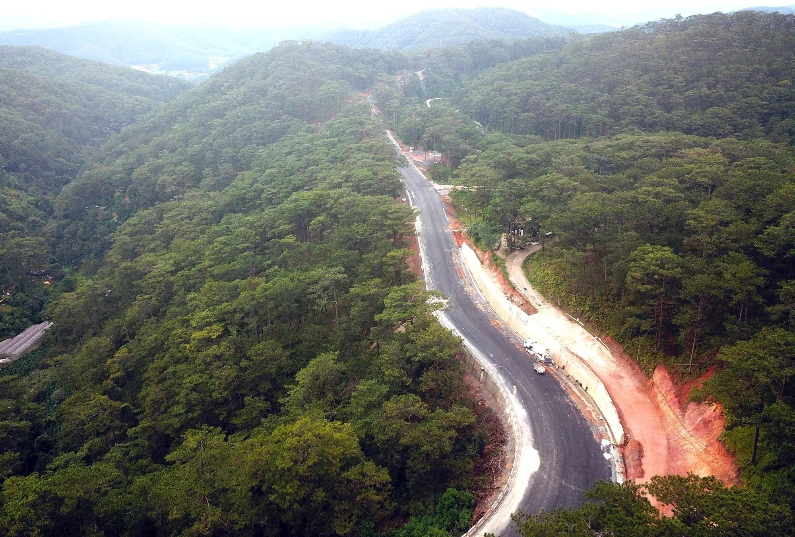
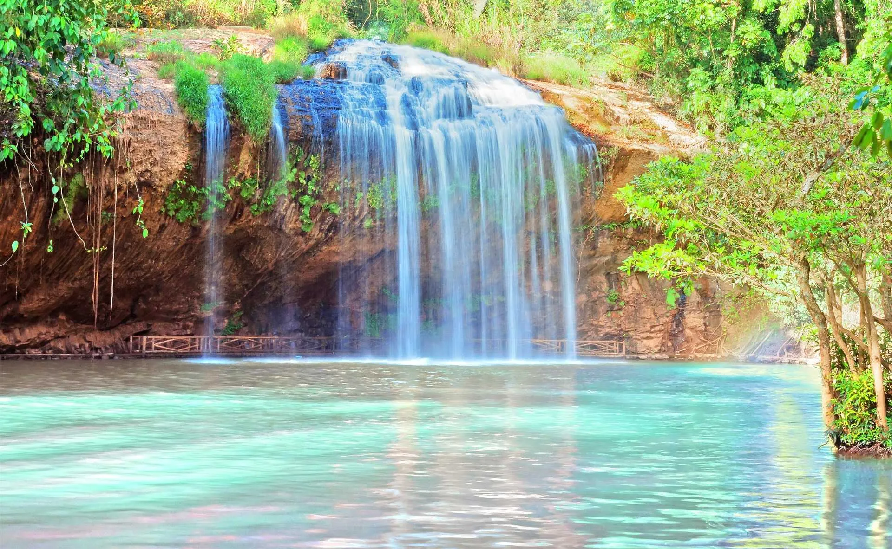
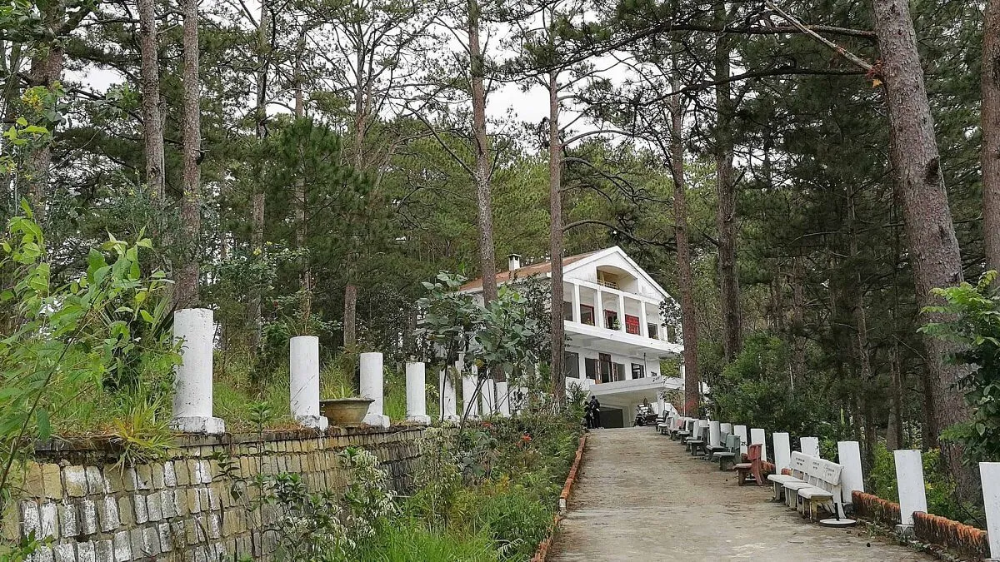
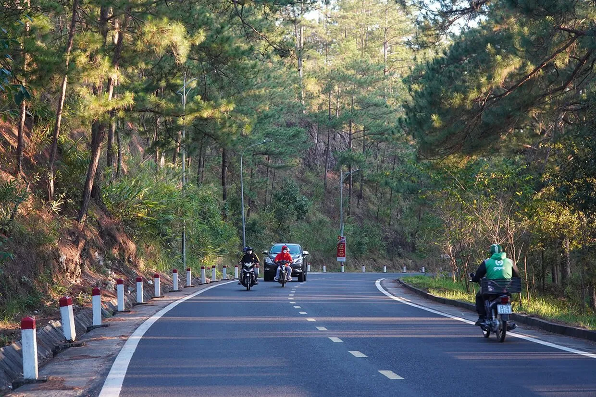

Prenn Pass - a charming road that attracts backpackers in 2025

Table of Contents
- 1. Introduction to Prenn Pass
- 2. The journey of formation and development of Prenn Pass
- 3. How to get to Prenn Da Lat pass
-
4. Experience Prenn Pass - Natural beauty attracts all eyes
- 4.1. Breathtaking and peaceful natural scenery at Prenn Pass
- 4.2. The winding road is captivating for backpackers at Prenn Pass
- 4.3. Prenn Waterfall - Pristine beauty in the middle of Prenn Pass
- 4.4. Prenn Pass Abandoned Villa - Evoking curiosity and discovery
- 4.5. The cherry blossom garden blooms every spring at Prenn Pass
- 5. Safety tips when crossing Prenn Pass - Travelers should pay attention!
-
6. Interesting stops on the Prenn pass road
- 6.1. Datanla Waterfall - A masterpiece among the mountains on the Prenn Pass road
- 6.2. Robin cable car hill - New perspective from above along the Prenn pass route
- 6.3. Leaf Phong tourist area - Unique Japanese space near Prenn pass in the heart of Da Lat
- 6.4. Bali Heaven's Gate - Green Hills: Outstanding check-in point near Prenn Da Lat pass
- 6.5. Cafe along Prenn Pass - Admiring the pine forest, sipping coffee amidst Da Lat's nature
- 7. Ideal stop after Prenn Pass journey – Xom Leo Grill & Chill
During the journey to explore the mountain town of Da Lat, Prenn Pass appears like a vivid natural picture, highlighted with soft bends between rolling mountains and forests. This place not only brings wild and majestic beauty but also an emotional destination for those who love adventure and experience.
Crossing Prenn Pass, visitors will admire one of the most beautiful roads in the land of fog. The breathtaking beauty and continuous turns create a feeling of excitement, making the journey more memorable than ever. If you are a lover of exploration, don't miss the opportunity to conquer this poetic road during your upcoming trip to Da Lat.
1. Introduction to Prenn Pass
Location:No. 20, Lien Khuong - Prenn Expressway, Ward 3, Da Lat City, Lam Dong Province.
Prenn Pass is known as one of the most beautiful passes in Da Lat, with charming natural beauty and a length of more than 11km. Located amidst the majestic mountains and forests of Lam Dong, this pass is not only a route connecting Da Lat city with neighboring areas but also an ideal destination for those who love to explore.
The name "Prenn" originates from the ancient Champa language, meaning "invasion" or "occupation". According to local people, this name is related to the period of fighting between the Cham people and indigenous people. In addition, the name of the pass is also associated with Prenn waterfall - a famous nearby landscape, contributing to the characteristics and historical value of this land.
2. The journey of formation and development of Prenn Pass
Today, when crossing Prenn Pass - one of the prominent passes in Da Lat - few people realize that this place once marked many notable historical events. Construction of the current pass started in February 1943 under the construction of contractor Gross, to replace the old road leading from Prenn waterfall to the city center. The new route is designed with 79 bends, some of which have a radius of up to 1,000 meters, creating the characteristic flexibility of this pass.
By the early 2000s, facing increasing pressure from traffic demand, the local government decided to restore the old pass route and form Mimosa Pass parallel to Prenn Pass. The goal is to divert traffic, reduce the load on the main pass route and serve travel between Da Lat and surrounding areas more effectively.
However, the plan to organize one-way traffic between the two passes was not implemented as planned. Instead, Mimosa Pass is mainly used to transport agricultural products from Da Lat to other provinces in the region.
An important milestone occurred in 2016, when the Ministry of Transport decided to adjust the route of Highway 20, shifting the main route to Mimosa Pass. Since then, Prenn Pass has been classified as a local route, managed by the Department of Transport of Lam Dong province. This change has contributed to restructuring the traffic network in Da Lat, creating a clear separation of functions between pass routes, while helping regional traffic become more flexible.
3. How to get to Prenn Pass in Da Lat
Conquering Prenn Pass is not too complicated, especially for travelers who love to explore breathtaking passes. From many different directions, you can easily reach this location.
If departing from City. Ho Chi Minh, you should go early to take advantage of the time. The popular route is to follow Highway 1K through Bien Hoa, then join Highway 1A to reach Dau Giay intersection - an ideal place to stop to rest, have breakfast and prepare for the long journey.
From Dau Giay intersection, you turn left onto Highway 20, the road leading straight to Da Lat. On this journey, you will pass Bao Loc Pass - the starting point to clearly feel the cold climate of the highlands. Take the opportunity to stop to rest, fill up your gas tank and wear warm clothes to be ready to continue your journey to Prenn Pass.
In case you travel to Da Lat by public transport such as plane or bus, renting a motorbike in the city center is the right choice if you want to experience for yourself the feeling of driving through the pass. In addition, taxi service or car rental with a local driver is also a safe and convenient option for those who are unfamiliar with the mountain pass or traveling in large groups.
4. Experience Prenn Pass - Natural beauty attracts all eyes
With an enchanting wild appearance, Prenn Pass is like a masterpiece of nature, where winding roads blend with the green of the mountains and forests and the roaring sound of waterfalls. Every bend and every slope seems to paint a vivid picture, making visitors moved by the beauty of the Da Lat plateau.
4.1. Breathtaking and peaceful natural scenery at Prenn Pass

The name “Prenn” suggests a fascinating journey of discovery. Along the pass, you will pass many interesting destinations, surrounded by vast pine forests and stretching hillsides. Unlike passes with dangerous terrain, this route is quite "easy" with a moderate slope, not too many sharp turns, bringing a feeling of safety and relaxation when traveling, even for those who are not used to running on passes.
In particular, Prenn road is an ideal destination for those who love backpacking. The feeling of gently conquering each turn, being caressed by the wind and embraced by nature makes the trip full of emotions.
On the way, you will encounter many typical scenes of the foggy country: green pine forests whispering in the wind, colorful flower valleys, stretching vegetable fields or small farms nestled on the mountainside. All create a peaceful scene, an ideal place for you to take a break from the hustle and bustle of life and immerse yourself in nature.
4.2. The winding road is captivating for backpackers at Prenn Pass

Not only is it the entrance to Da Lat, Prenn Pass is also a "mecca" for drivers who are passionate about conquering the road. The gentle, soft curves like silk strips across the mountainside create an irresistible attraction. Each roundabout brings a new visual experience, both challenging driving skills and stimulating the sense of discovery of travelers. Immersed in the nature of the mountains and forests, crossing smooth passes, the feeling of excitement seems to rise with every turn of the throttle.
4.3. Prenn Waterfall - Pristine beauty in the middle of Prenn Pass

On the journey to conquer Prenn Pass, you will encounter one of the famous stops – Prenn Waterfall. Nestled in the middle of a vast pine forest, the waterfall has a wild and poetic natural beauty. The stream of water poured down from above, creating white foam, like an iridescent silk curtain in the middle of the deep green mountains and forests.
The space around the waterfall is cool and fresh, making anyone who stops by easily attracted. This is not only an ideal place to relax, but also an impressive check-in point for nature lovers and photography enthusiasts.
4.4. Prenn Pass Abandoned Villa - Evoking curiosity and discovery

Hidden on the edge of Prenn Pass is an ancient mansion that once made many people shiver because of mysterious rumors. Associated with thrilling stories, this villa was once known as the "Prenn Pass haunted house" - a destination that makes many travelers curious when passing by.
Despite its gloomy appearance in the past, today this place has been somewhat renovated, taking on a new, brighter look. Local people even call it by gentler names such as "White Villa" or "Prenn Pass Villa". Believe it or not, stopping here is still an interesting experience, mixed with a bit of mystery for your journey.
4.5. The cherry blossom garden blooms every spring at Prenn Pass

One of the things that makes Prenn Pass uniquely poetic in spring is the cherry blossom garden stretching along the mountainside. Stretching from the area bordering Duc Trong district to the top of the pass, the garden is brilliant with thousands of cherry apricot trees blooming every Tet and spring.
When the pale pink flower clusters bloom, the space becomes sparkling like a watercolor painting. The gentle pink color interwoven in the deep green background of the pine forest makes the scene here seem like something out of a fairy tale. On sunny days in early spring, walking or stopping to take photos here is definitely an experience that visitors cannot miss.
5. Safety tips when crossing Prenn Pass - Travelers should pay attention!
Although traveling through Prenn Pass is not as harsh as some other passes, it still requires the driver to firmly steer, obey traffic laws and be carefully prepared to ensure a safe and complete journey. Here are some important notes you should not ignore:
-
Avoid traveling early in the morning and late at night: Da Lat's climate is especially dense with fog between 6 am and 7 pm, causing serious visibility limitations. It's best to plan to go during the day, when the weather is dry and clear.
-
Maintain a steady speed: Do not speed too fast, overtake recklessly or steer sharply when cornering. Always keep a safe distance from the vehicle in front to promptly handle any unexpected situations.
-
Check the vehicle carefully: Before going down the pass, make sure the brake system works well, the tires are not worn, and the headlights and turn signals are clear.
-
Comply with signs and reflectors: Prenn Pass has many convex/concave mirrorsat the bends to help drivers see better - don't miss them! In particular, absolutely do not stop your vehicle at places that are out of sight.
-
Priority for manual or manual transmission vehicles: These vehicles help you easily control speed and brake the engine when going downhill. If you use a scooter, understand how to brake properly to avoid sudden braking causing skidding.
6. Interesting stops on the Prenn pass road
When exploring Prenn Pass - one of the most poetic roads in Da Lat - you will encounter a series of attractive destinations scattered along the path. Not just a travel journey, this is also an excursion with nature, culture and unique experiences waiting for you.
6.1. Datanla Waterfall - A masterpiece among the mountains on the Prenn Pass road

Only about 6km from the center of Da Lat, Datanla waterfall is a prominent stop that you can hardly miss. The water stream is over 20 meters high and flows strongly all year round, creating a scene that is both majestic and peaceful. In addition to sightseeing, visitors can also try thrilling activities such as slides, ziplining over waterfalls or rowing boats over rapids.
##### 6.2. Robin cable car hill - New perspective from above along the Prenn pass route
If you want to admire the panoramic view of Da Lat from a different angle, Robin cable car hill is the ideal choice. From the cabin suspended in the air, you can take in all the views of the lush green mountains, Tuyen Lam Lake and the romantic foggy city. This is both a relaxing and extremely "photogenic" experience for virtual life enthusiasts.
6.3. Leaf Phong tourist area - Unique Japanese space near Prenn pass in the heart of Da Lat

On the Prenn Pass journey, you can visit the Maple Leaf tourist area - a place that recreates natural scenery like in Japanese movies. Here, visitors will admire hundreds of precious trees, especially the brilliant maple leaf forest. In addition, the Koi fish pond area, bonsai garden and unique "five-roof" house make this place even more attractive.
6.4. Bali Heaven Gate - Green Hills: Outstanding check-in point near Prenn Pass in Da Lat

A miniature "Indonesian corner" in the middle of Da Lat, Bali Heaven Gate - Green Hills is inspired by famous architecture in Bali island. With its symmetrical design and cloudy sky background, this place is an ideal shooting spot for those who want to bring home picturesque photos.
6.5. Cafe along Prenn Pass - Admiring the pine forest, sipping coffee amidst the nature of Da Lat

After a winding mountain pass, what's better than stopping by small cafes nestled in the middle of the pine forest? Shops like:
-
Goodmorning Da Lat Coffee
-
Cabin In The Woods
-
Coffee Waiting for Someone
... all provide a very chill space, where you can relax, enjoy a warm cup of coffee and watch the mist cover the mountains and forests.
7. Ideal stopover after the Prenn Pass journey – Xom Leo Grill & Chill Shop
After traveling through the soft and majestic curves of Prenn Pass, there is nothing better than finding a cozy place to relax and recharge. Xom Leo Grill & Chill Shop is the ideal suggestion for you.
The restaurant's space is designed in a rustic, intimate style, combining the warmth of the charcoal stove and the open view to nature, bringing a feeling of absolute relaxation in the heart of Da Lat.
Here, you can enjoy grilled dishes rich in mountain flavors, in the chilly atmosphere typical of the plateau - an experience that is both delicious and memorable after the trip through the romantic Prenn Pass.
📍Address:113 Huynh Tan Phat, Ward 11, Da Lat, Lam Dong
📞Hotline:076.45.27.336 – 0899.42.8434 – 0902.91.2240
📩Reserve Table:*Here*
🗺️See Directions:*See map*
Prenn Pass is not only a road connecting famous landmarks but also an emotional journey, where the majestic beauty of Da Lat's nature converges. From poetic winding curves, pristine waterfalls, to mysterious villas and brilliant cherry blossom gardens every spring - all create a route not to be missed for anyone who loves to explore and experience. And after the trip, find cozy spaces like Xom Leo Grill & Chill Shop to end the journey in relaxation and completeness.